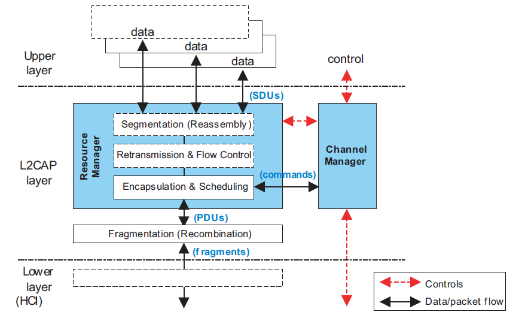
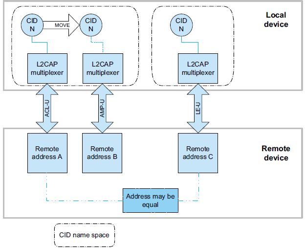
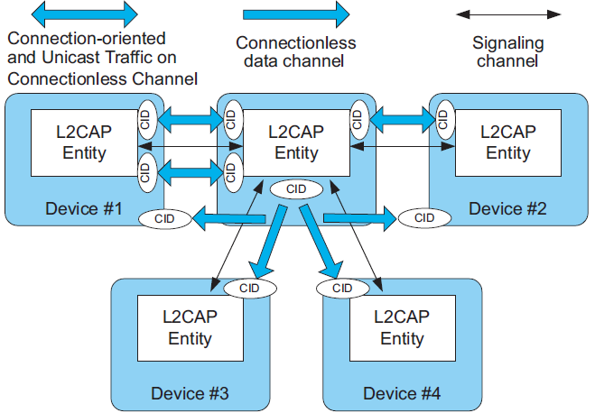
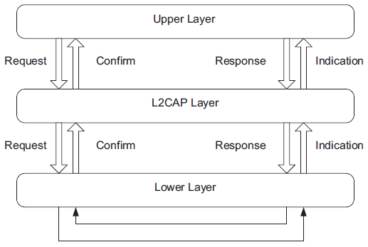

L2CAP协议学习
1 概述
The Bluetooth logical link control and adaptation protocol (L2CAP) supports higher level protocol multiplexing, packet segmentation and reassembly, and the conveying of quality of service information. The protocol state machine, packet format, and composition are described in this document.
2 INTRODUCTION
L2CAP provides connectionoriented and connectionless data services to upper layer protocols with protocol multiplexing capability and segmentation and reassembly operation.
Upper layer data packets (L2CAP Service Data Units, SDU) is up to 64 kilobytes in length.
L2CAP also permits per-channel flow control and retransmission.
The L2CAP layer provides logical channels, named L2CAP channels, which are multiplexed over one or more logical links.
2.1 L2CAP FEATURES

2.1.1 Protocol/channel multiplexing
An L2CAP channel shall operate over one Controller at a time. During channel setup, protocol multiplexing capability is used to route the connection to the correct upper layer protocol.
For data transfer, logical channel multiplexing is needed.
2.1.2 Segmentation and reassembly
This provides the following benefits:
- Segmentation will allow the interleaving of application data units in order to satisfy latency requirements.
- Memory and buffer management is easier when L2CAP controls the packet size.
- Error correction by retransmission can be made more efficient.
- The amount of data that is destroyed when an L2CAP PDU is corrupted or lost can be made smaller than the application's data unit.
- The application is decoupled from the segmentation required to map the application packets into the lower layer packets.
2.1.3 Flow control per L2CAP channel
Controllers provide error and flow control for data going over the air and HCI flow control exists for data going over an HCI transport. When several data streams run over the same Controller using separate L2CAP channels, each channel requires individual flow control. A window based flow control scheme is provided.
2.1.4 Error control and retransmissions
L2CAP provides error checks and retransmissions of L2CAP PDUs.
2.1.5 Support for Streaming
Streaming applications such as audio set up an L2CAP channel with an agreed-upon data rate。 don't use flow contlor mechanisms in L2CAP layer and below(HCI & Controller). A flush timeout is used to keep data flowing on the transmit side.
2.1.6 Fragmentation and Recombination
During transmission of an L2CAP PDU, many different levels of fragmentation and recombination may occur in both peer devices.
However the PDU is fragmented within the stack, the receiving L2CAP entity still recombines the fragments to obtain the original L2CAP PDU.
2.1.7 Quality of Service
The L2CAP connection establishment process allows the exchange of information regarding the quality of service (QoS) expected between two Bluetooth devices. Each L2CAP implementation monitors the resources used by the protocol and ensures that QoS contracts are honored.
2.2 ASSUMPTIONS
The protocol is designed based on the following assumptions:
- Controllers provide orderly delivery of data packets, although there might be individual packet corruption and duplicates.
- Controllers always provide the impression of full-duplex communication channels. This does not imply that all L2CAP communications are bidirectional. Unidirectional traffic does not require duplex channels.
- The L2CAP layer provides a channel with a degree of reliability based on the mechanisms available in Controllers and with additional packet segmentation, error detection, and retransmission that can be enabled in the enhanced L2CAP layer.
- Controllers provide error and flow control for data going over
the air and HCI flow control exists for data going over an HCI
transport. It has four modes to provide different level of flow
control requirements. The Flow and Error Control block provides four modes:
- Enhanced Retransmission mode offer segmentation, flow control and L2CAP PDU retransmissions.
- Retransmission Mode offer segmentation, flow control and L2CAP PDU retransmissions.
- Flow control mode offers just the segmentation and flow control functions.
- Streaming mode offers segmentation and receiver side packet flushing.
2.3 SCOPE
The following features are outside the scope of L2CAP’s responsibilities:
- L2CAP does not transport synchronous data designated for SCO or eSCO logical transports.
- L2CAP does not support a reliable broadcast channel.
3 GENERAL OPERATION
L2CAP is based around the concept of ’channels’. Each one of the endpoints of an L2CAP channel is referred to by a channel identifier (CID).

The AMP-U logical link shares the CID name space with its associated ACL-U logical link.
3.1 CHANNEL IDENTIFIERS
A channel identifier (CID) is the local name representing a logical channel endpoint on the device. The null identifier (0x0000) shall never be used as a destination endpoint. Identifiers from 0x0001 to 0x003F are reserved for specific L2CAP functions.At a minimum, the L2CAP Signaling channel (Fixed Channel 0x0001) or the L2CAP LE Signaling channel (Fixed Channel 0x0005) shall be supported. The Information Request / Response mechanism shall be used to determine which fixed channels a remote device supports over the ACL-U logical link.
The characteristics of each fixed channel are defined on a per channel basis. Fixed channel characteristics include configuration parameters (e.g., reliability, MTU size, QoS), security, and the ability to change parameters using the L2CAP configuration mechanism. Fixed channels shall only run over ACL-U, ASB-U, or LE-U logical links and shall not be moved.
for the remaining CIDs, two simultaneously active L2CAP channels shall not share the same CID.
3.2 OPERATION BETWEEN DEVICES

There are also a number of CIDs reserved for special purposes.
| Channel Type | Local CID (sending) | Remote CID (receiving) |
|---|---|---|
| Connection-oriented | Dynamically allocated and fixed | Dynamically allocated and fixed |
| Connectionless data | 0x0002 (fixed) | 0x0002 (fixed) |
| L2CAP Signaling | 0x0001 and 0x0005 (fixed) | 0x0001 and 0x0005 (fixed) |
3.3 OPERATION BETWEEN LAYERS
L2CAP implementations transfer data between upper layer protocols and the lower layer protocol.any L2CAP implementation should:
- export a number of services
- support a set of signaling commands
- accept certain types of events from lower layers and generate events to upper layers.

3.4 MODES OF OPERATION
L2CAP channels may operate in one of five different modes as selected for each L2CAP channel.
The modes are:
- Basic L2CAP Mode (equivalent to L2CAP specification in Bluetooth v1.1) the default mode
- Flow Control Mode
- Retransmission Mode
- Enhanced Retransmission Mode used for all reliable channels created over AMP-U logical links and for ACL-U logical links operation under some conditions.
- Streaming Mode used for streaming applications created over AMP-U logical links and ACL-U logical links operating under some conditions.
- LE Credit Based Flow Control Mode
3.5 MAPPING CHANNELS TO LOGICAL LINKS
L2CAP maps channels to Controller logical links, which in turn run over Controller physical links. All logical links going between a local Controller and remote Controller run over a single physical link.There is one ACL-U logical link per BR/EDR physical link and one LE-U logical link per LE physical link, while there may be multiple AMP-U logical links per AMP physical link.
All Best Effort and Guaranteed channels going over a BR/EDR physical link between two devices shall be mapped to a single ACL-U logical link. All Best Effort channels going over an AMP physical link between two Controllers shall be mapped to a single AMP-U logical link while each Guaranteed channel going between two Controllers shall be mapped to its own AMP-U logical link with one AMP-U logical link per Guaranteed channel. All channels going over an LE physical link between two devices shall be treated as best effort and mapped to a single LE-U logical link.